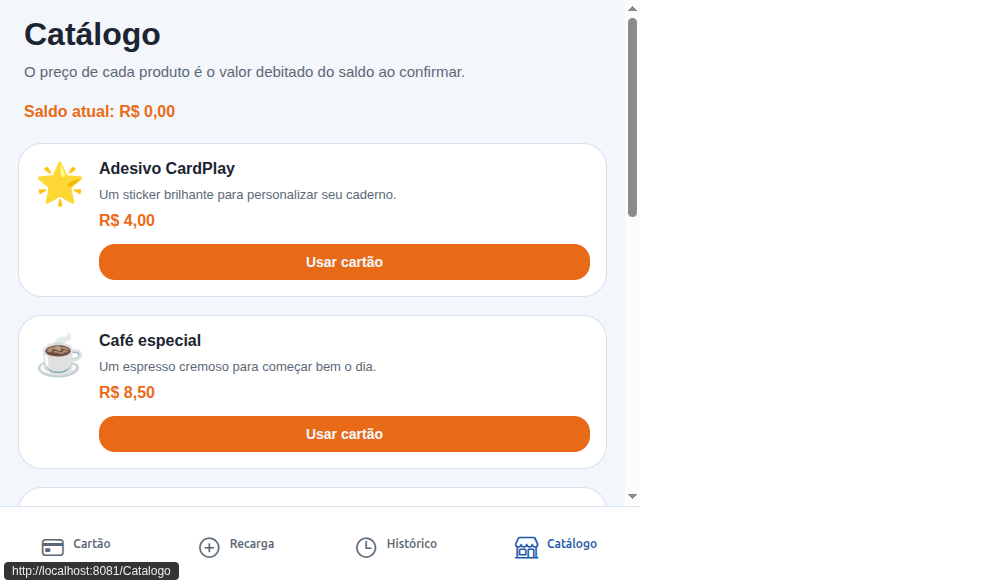
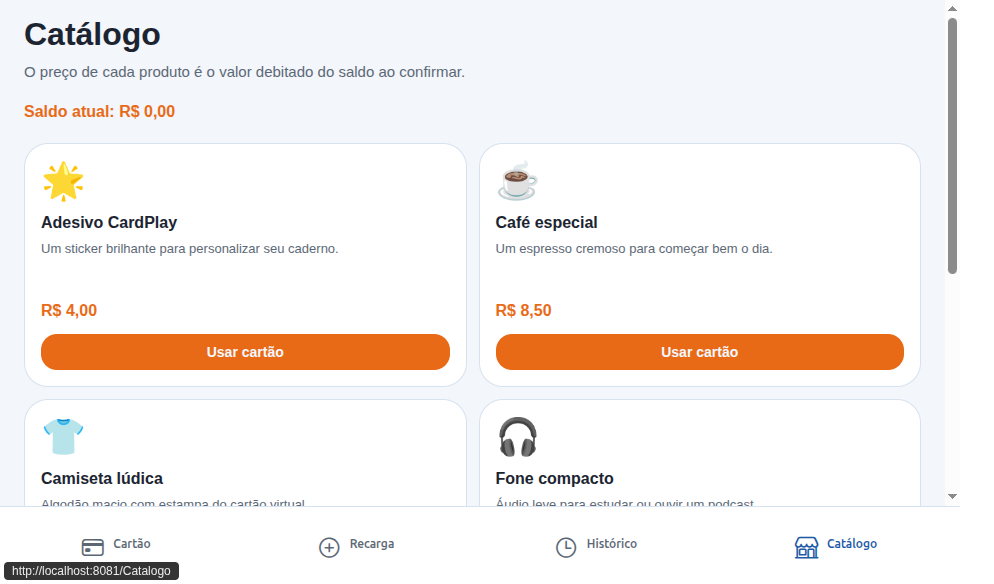

CP-001 — Navegação da compra com saldo
Rodada executada em 2026-10-08 no navegador integrado do Cursor. A decisão de aceitar a entrega continua humana.
Ambiente
| Campo | Valor |
|---|---|
| Aplicativo | http://localhost:8081 |
| API | http://127.0.0.1:5080 |
| Branch | docs/cp-001-compra-com-saldo |
| Commit da jornada | 4a199f2. O NAV-08 foi refeito depois da correção da grade, ainda sem commit. |
| Navegador | cursor-ide-browser, aba visível |
Resultado
| Total | Quantidade |
|---|---|
| Planejado | 8 |
| Executado | 8 |
| Passou | 8 |
| Falhou | 0 |
Cartões
| Código | Saldo ao fim | Movimentações |
|---|---|---|
| CP-GK2U8Y | R$ 1,50 | Recarga R$ 10,00; compra Café especial R$ 8,50, quantidade 1 |
| CP-RZ3TQ2 | R$ 0,00 | Recarga R$ 4,00; compra Adesivo CardPlay R$ 4,00, quantidade 1 |
Cenários
| ID | Resultado | Observado |
|---|---|---|
| NAV-01 | Passou | Sem cartão, “Usar cartão” visível e desabilitado, com “Solicite um cartão”. |
| NAV-02 | Passou | CP-GK2U8Y, recarga R$ 10,00, café a R$ 8,50 no catálogo, histórico com “+ R$ 10,00”. |
| NAV-03 | Passou | Aviso “Confirmar a compra de Café especial por R$ 8,50?”. Cancelar manteve R$ 10,00 e não chamou a compra. |
| NAV-04 | Passou | Compra do café, saldo R$ 1,50, histórico com nome, quantidade 1 e R$ 8,50 sem “+”. |
| NAV-05 | Passou | Saldo e compra continuaram depois de percorrer as abas e recarregar a página. A URL do documento não mudou entre abas. |
| NAV-06 | Passou | “Saldo insuficiente para concluir a compra.” Saldo R$ 1,50. POST /compras respondeu 400. Histórico sem adesivo. |
| NAV-07 | Passou | CP-RZ3TQ2, recarga R$ 4,00, adesivo, saldo R$ 0,00, compra sem “+” e recarga com “+”. |
| NAV-08 | Passou | 640 px: um produto por linha. 960 px: duas colunas. Saldo R$ 0,00 e “Usar cartão” habilitado. Sem compra nova. |
NAV-08
A primeira tentativa mediu a janela e manteve duas colunas abaixo de 720 px. A grade passou a usar a largura medida do catálogo. A nova execução, no mesmo cartão e sem compra nova, ficou assim:

